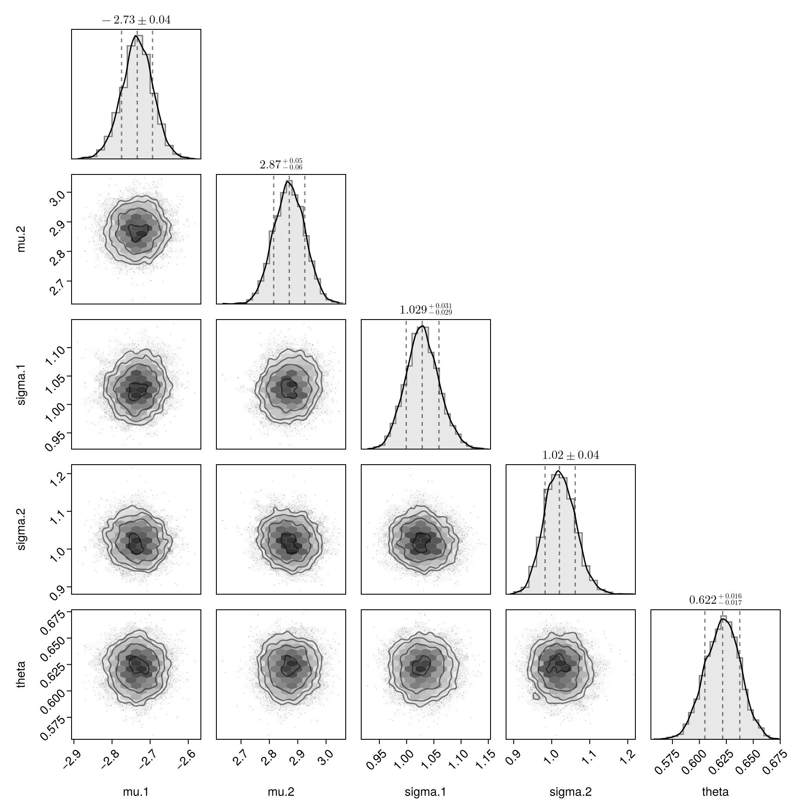
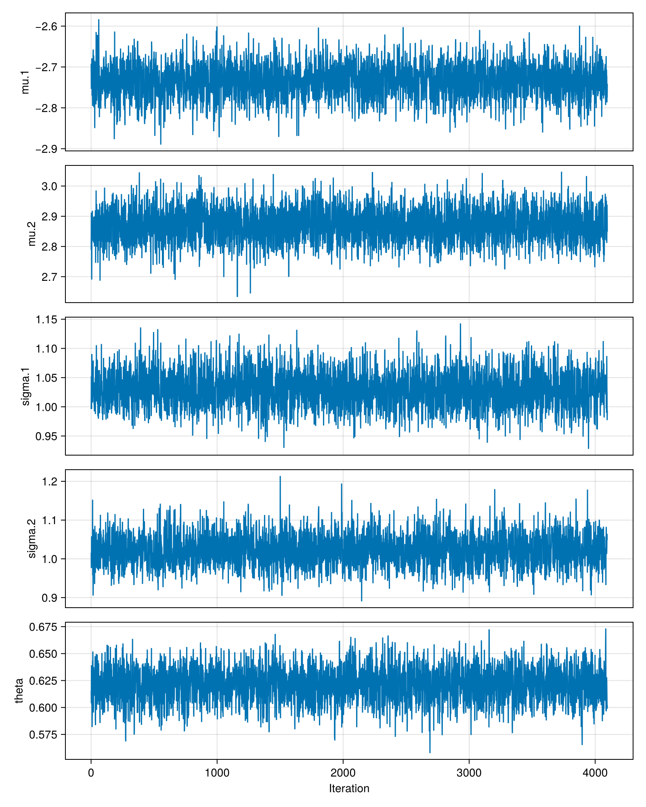
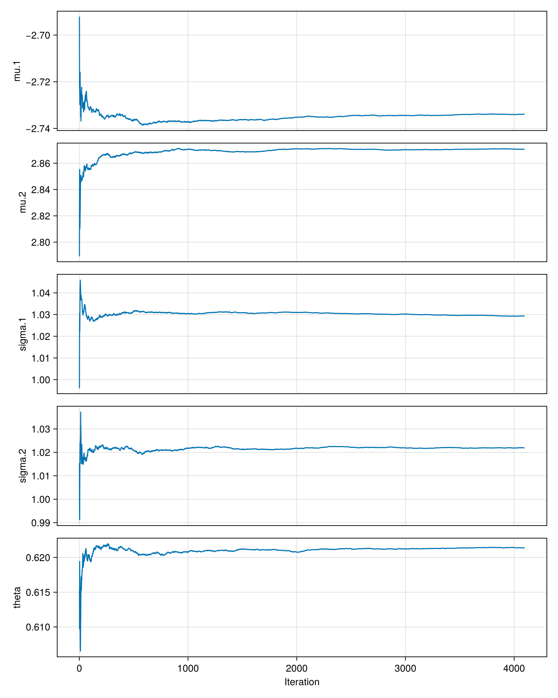
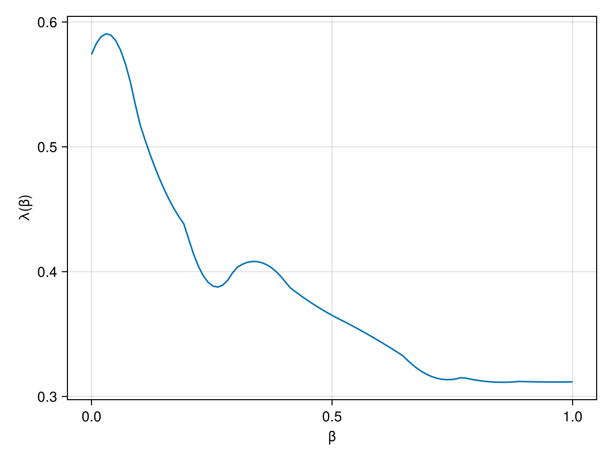
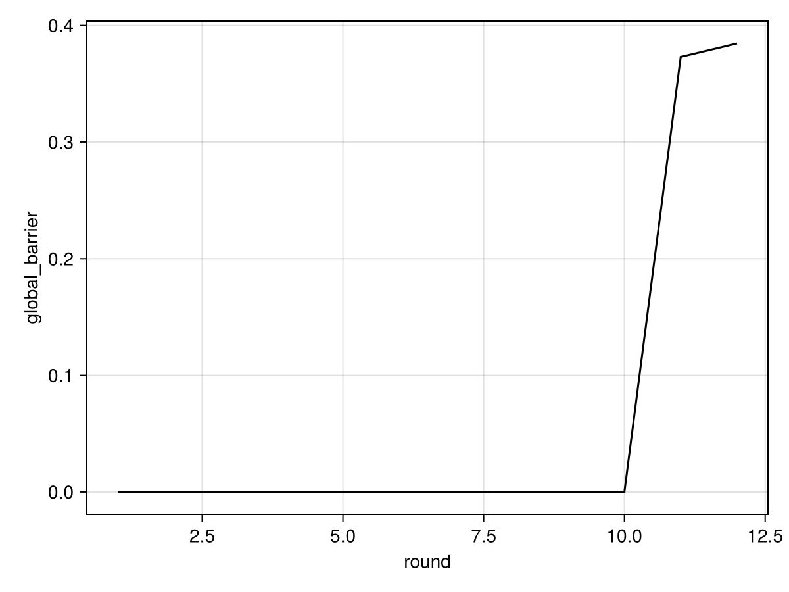
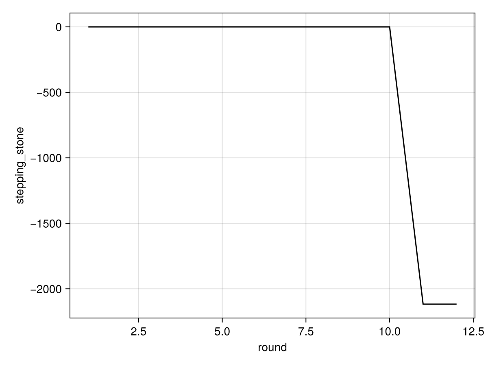
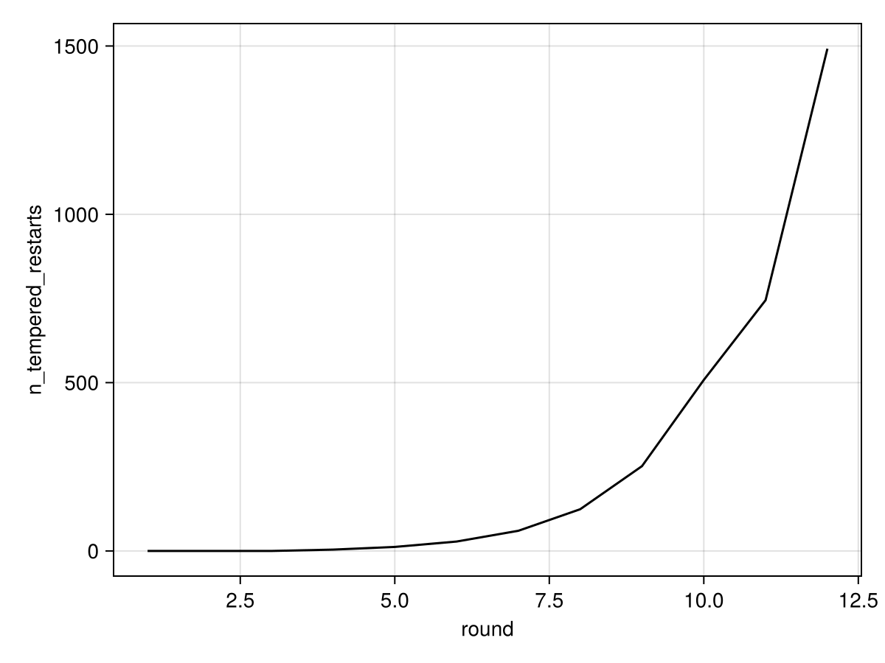

Description
A Two-Dimensional Gaussian Mixture Model
Pair plot
Diagonal entries show estimates of the marginal densities as well as the (0.16, 0.5, 0.84) quantiles (dotted lines). Off-diagonal entries show estimates of the pairwise densities.
 🔠Full page â🔗 Info{kind=link}
Trace plots
 🔠Full page{kind=link}
Moments
| parameters | mean | std | mcse | ess_bulk | ess_tail | rhat | ess_per_sec |
|---|---|---|---|---|---|---|---|
| mu.1 | -2.73394 | 0.0412361 | 0.000779132 | 2806.42 | 2991.19 | 1.00071 | missing |
| mu.2 | 2.87068 | 0.0547622 | 0.000879549 | 3885.78 | 3726.36 | 0.999977 | missing |
| sigma.1 | 1.02935 | 0.0304797 | 0.000564652 | 2894.96 | 3527.56 | 1.00258 | missing |
| sigma.2 | 1.02197 | 0.0405561 | 0.000746378 | 2952.78 | 3268.81 | 0.999783 | missing |
| theta | 0.621372 | 0.0160355 | 0.000306235 | 2745.04 | 3074.56 | 1.00083 | missing |
Cumulative traces
For each iteration $i$, shows the running average up to $i$, $\frac{1}{i} \sum_{n = 1}^{i} x_n$.
 🔠Full page{kind=link}
Local communication barrier
When the global communication barrier is large, many chains may be required to obtain tempered restarts.
The local communication barrier can be used to visualize the cause of a high global communication barrier. For example, if there is a sharp peak close to a reference constructed from the prior, it may be useful to switch to a variational approximation.
 🔠Full page â🔗 Info{kind=link}
GCB estimation progress
Estimate of the Global Communication Barrier (GCB) as a function of the adaptation round.
The global communication barrier can be used to set the number of chains. The theoretical framework of Syed et al., 2021 yields that under simplifying assumptions, it is optimal to set the number of chains (the argument n_chains in pigeons()) to roughly 2Λ.
Last round estimate: $0.3845087725309221$
 🔠Full page â🔗 Info{kind=link}
Evidence estimation progress
Estimate of the log normalization (computed using the stepping stone estimator) as a function of the adaptation round.
Last round estimate: $-2117.0654247568277$
 🔠Full page â🔗 Info{kind=link}
Round trips
Number of tempered restarts as a function of the adaptation round.
A tempered restart happens when a sample from the reference percolates to the target. When the reference supports iid sampling, tempered restarts can enable large jumps in the state space.
 🔠Full page â🔗 Info{kind=link}
Pigeons summary
| round | n_scans | n_tempered_restarts | global_barrier | global_barrier_variational | last_round_max_time | last_round_max_allocation | stepping_stone |
|---|---|---|---|---|---|---|---|
| 1 | 2 | 0 | 1.36424e-12 | missing | 1.51431 | 3.23606e7 | 0.0 |
| 2 | 4 | 0 | 6.82121e-13 | missing | 1.55743 | 50688.0 | 0.0 |
| 3 | 8 | 0 | 3.41061e-13 | missing | 2.66328 | 95856.0 | -2.84217e-13 |
| 4 | 16 | 4 | 5.68434e-14 | missing | 6.32276 | 186128.0 | -2.84217e-14 |
| 5 | 32 | 12 | 2.55795e-13 | missing | 11.0742 | 222016.0 | 2.84217e-14 |
| 6 | 64 | 28 | 9.9365e-14 | missing | 17.8588 | 277472.0 | -1.42109e-14 |
| 7 | 128 | 60 | 1.20792e-13 | missing | 65.4098 | 426464.0 | 3.59712e-14 |
| 8 | 256 | 124 | 1.17351e-13 | missing | 102.866 | 670688.0 | -4.44089e-16 |
| 9 | 512 | 252 | 6.40599e-14 | missing | 200.091 | 1.26234e6 | 3.9968e-15 |
| 10 | 1024 | 508 | 1.09246e-13 | missing | 399.852 | 2.24355e6 | 1.77636e-15 |
| 11 | 2048 | 745 | 0.373017 | missing | 368.76 | 1.33337e9 | -2117.08 |
| 12 | 4096 | 1492 | 0.384509 | missing | 731.662 | 2.62525e9 | -2117.07 |
Pigeons inputs
| Keys | Values |
|---|---|
| extended_traces | false |
| checked_round | 0 |
| extractor | nothing |
| record | Function[Pigeons.traces, Pigeons.round_trip, Pigeons.log_sum_ratio, Pigeons.timing_extrema, Pigeons.allocation_extrema] |
| multithreaded | false |
| show_report | true |
| n_chains | 10 |
| variational | GaussianReference(Dict{Symbol, Any}(:singleton_variable => [-2.7339430081531586, 1.7235199237061185, 0.02849087125149645, 0.020943117266029893, 0.4959387359078168]), Dict{Symbol, Any}(:singleton_variable => [0.0412361080412849, 0.012024791663646844, 0.029573062197740616, 0.039593034933872444, 0.0681923197378255]), 10) |
| explorer | nothing |
| n_chains_variational | 0 |
| target | StanLogPotential(low_dim_gauss_mix_model) |
| n_rounds | 12 |
| exec_folder | nothing |
| reference | nothing |
| checkpoint | false |
| seed | 1 |